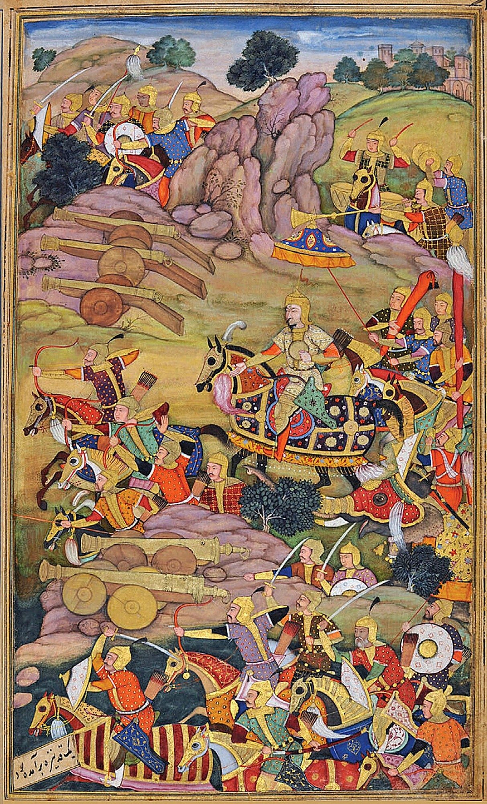
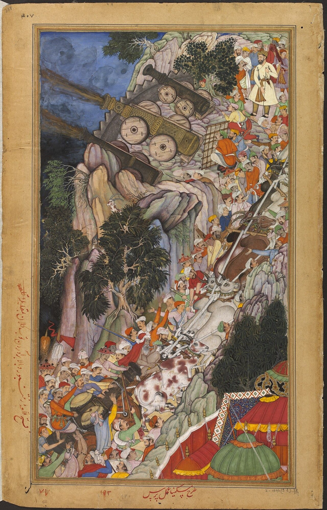

Chapter 9: Empires and Their Rivals: Mughals, Ahoms, Marathas, Sikhs and Mysore, 1526–1800¶
9.1 Introduction¶
The period from Bābur’s victory at Pānīpat in 1526 to the end of the eighteenth century was one of the most militarily eventful in South Asian history. The Mughal empire, built on cavalry, artillery and a sophisticated system of military ranks, came to rule most of the subcontinent by 1700. It was resisted throughout its history: by Rajput kings, by the Ahoms of Assam, by the Deccan sultanates, and above all by the Marathas, whose light cavalry and hill forts wore down Aurangzeb’s armies. In the eighteenth century the empire fragmented into successor states — the Nizam’s Hyderabad, Awadh, Bengal, the Maratha confederacy, the Sikh kingdom of Punjab, Mysore — which fought each other, Afghan invaders and the European trading companies. By 1800 the East India Company had emerged as the strongest power in India, a process described in Chapter 19.
The modern study of this period’s warfare owes much to Jos Gommans, whose Mughal Warfare places the Mughal army in its ecological and logistical setting (Gommans 2002); to Dirk Kolff’s work on the military labour market (Kolff 1990); to Stewart Gordon on the Marathas (Gordon 1993); and to Kaushik Roy’s surveys (Roy 2004, 2011). Gommans and Kolff’s reader Warfare and Weaponry in South Asia, 1000–1800 collects many of the specialist essays on which these accounts rest (Gommans and Kolff 2001). The places named in this chapter are shown in Figures 1.1 and 10.10.
9.2 The Mughal Conquest¶
9.2.1 Pānīpat, 1526¶
Ẓahīr al-Dīn Muḥammad Bābur, a Timurid prince from Ferghana who had lost his ancestral kingdom and established himself at Kabul, invaded India in 1525–26. On 21 April 1526 he met the army of the Afghan sultan Ibrāhīm Lodī at Pānīpat, north of Delhi (Figure 1.1, inset). Bābur’s own account, in his memoirs, describes how he chained together some seven hundred carts to form a barrier, with gaps for cavalry to charge through, placed his guns and matchlockmen behind them, and sent flanking parties of cavalry around the enemy’s wings in the Central Asian manoeuvre called tulughma (Figure 9.1) (Thackston 1996). Ibrāhīm’s much larger army, including many elephants, attacked the barrier, was enveloped on the flanks and broke. Ibrāhīm was killed. Bābur’s figures for the opposing armies — some 12,000 men on his side against perhaps 100,000 on Ibrāhīm’s — are those of the victor and cannot be checked, but the disparity was clearly large.


The next year, at Khanua near Agra (1527), Bābur defeated a confederacy of Rajput and Afghan forces led by Rāṇā Sāṅgā of Mewar, using similar tactics. Bābur’s successes owed much to his guns, which were new to most of his opponents, but at least as much to his cavalry and to the cohesion of his small army.
9.2.2 Sher Shāh and the Afghan interlude¶
Bābur’s son Humāyūn was driven out of India in 1540 by the Afghan ruler Sher Shāh Sūr (r. 1540–1545), who defeated him at Chausa (1539) and Kanauj (1540). Sher Shāh’s brief reign was important for the history of administration: he reformed revenue collection, built roads and post-stations, and revived ʿAlāʾ al-Dīn Khaljī’s practice of branding horses and keeping descriptive rolls of troops. Humāyūn returned with Persian help in 1555.
9.2.3 Akbar and the second battle of Pānīpat¶
Akbar succeeded his father in 1556 at the age of thirteen. In the same year his regent Bairam Khān defeated Hemū, the Hindu general and minister of the Sūr dynasty, who had taken Delhi, at the second battle of Pānīpat. Hemū, fighting from an elephant, was struck in the eye by an arrow, and his army collapsed — another example of the dependence of armies on the visible presence of their leader (Section 7.7).
9.3 The Mughal Military System¶
9.3.1 The manṣabdārī system¶
Akbar created the institution that held the Mughal empire together: the manṣab system. Every officer of the state, civil or military, held a rank (manṣab) expressed by two numbers. The zāt determined his personal status and salary; the sawār determined the number of horsemen he was required to maintain. Officers (manṣabdār) were paid either in cash or, more commonly, by the assignment of the land revenue of particular areas (jāgīr), which were transferred every few years to prevent officers from building local power bases. Horses were branded and troopers’ descriptions recorded to prevent the hiring of men for musters only (Athar Ali 1966; Richards 1993).
The system bound a diverse nobility — Central Asian Turks, Persians, Afghans, Indian Muslims, Rajputs and later Marathas — to the emperor, gave them a stake in the empire’s expansion, and provided a large cavalry army without the need for a single central treasury to pay every soldier. M. Athar Ali’s study of the nobility under Aurangzeb shows that Rajputs and other Hindus held a significant share of the higher ranks, and that the proportion of Marathas and Deccanis increased during the Deccan wars (Athar Ali 1966).
9.3.2 Composition of the army¶
The Mughal army consisted of the contingents of the manṣabdārs, the emperor’s own household troops (aḥadī), the artillery park with its guns and gunners, large numbers of matchlockmen and other infantry recruited from the military labour market, and the contingents of tributary chiefs. The imperial stables held thousands of horses and elephants. William Irvine’s study, based on Persian sources, describes the army’s organisation, pay, equipment and order of battle in detail (Irvine 1903).
Gommans emphasises that the Mughal army should be understood not as a European-style standing army but as a vast network of patronage that drew on the military resources of the whole society. Its strength lay in its ability to recruit, to feed huge numbers of men and animals on campaign, and to win over opponents with ranks and rewards as often as to defeat them in battle (Gommans 2002). The Mughal army fought relatively few pitched battles; its characteristic operations were sieges, marches that overawed opponents, and negotiations backed by the threat of force.
9.4 The Mughal Siege Train¶
The Mughal army’s characteristic operation was the siege. Its artillery park included great siege guns, some cast in bronze and capable of firing heavy stone or iron balls, drawn by teams of oxen and elephants (Figure 9.2); mortars; and lighter field pieces. Sieges began with the investment of the fort, the construction of fortified camps and lines, and the digging of trenches and covered approaches towards the walls. Mining was a specialised operation carried out by miners recruited for the purpose. Assaults were preceded by bombardment and by the explosion of mines. But the Mughals also relied heavily on blockade, bribery and negotiation: many forts surrendered on terms, and the generous treatment of commanders who surrendered encouraged others to do the same (Gommans 2002; Irvine 1903). The combination of force and inducement, in other words, followed the pattern that the Arthaśāstra had recommended for the capture of forts (Chapter 10).


9.5 The Mughals Beyond India: Kandahar and Balkh¶
The Mughal army did not always succeed. The fortress city of Kandahar, on the route between India and Iran, changed hands several times between the Mughals and the Safavids of Persia. After the Safavids took it in 1649, Shāh Jahān’s armies besieged it three times, in 1649, 1652 and 1653, under Aurangzeb and Dārā Shukōh, but failed to take it; Mughal artillery proved inadequate against its defences, and the long supply lines through the mountains were difficult to sustain. In 1646–47, Shāh Jahān sent an army to conquer Balkh and Badakhshan, the Central Asian homeland of the dynasty; it occupied Balkh but could not hold it against the Uzbeks and the harsh conditions, and withdrew with heavy losses. These failures show the limits of the Mughal military system outside the subcontinent, where it lacked the resources of the Indian military labour market and the agrarian wealth of Hindustan (Richards 1993; Gommans 2002).
9.6 The Mughal Army on the March¶
European visitors to the Mughal court were astonished by the size of the imperial army on the march. The French physician François Bernier, who accompanied Aurangzeb’s journey from Delhi to Kashmir in 1664–65, described a moving city: the emperor’s great tents, carried in duplicate so that one set could be pitched at the next halt before the emperor arrived; the camps of the nobles laid out in fixed order around the imperial enclosure; the markets that travelled with the army, so that every kind of food and goods could be bought in camp; and the vast crowds of servants, merchants, camp followers and animals. He estimated the number of people accompanying the army in the hundreds of thousands, an estimate that cannot be checked but conveys the scale of the enterprise (Gommans 2002).
The Mughal army on the march was as much a political as a military institution. The emperor’s progress displayed his power to his subjects and tributaries; the camp was the seat of government, where business was conducted, petitions received and nobles assembled; and the logistics of moving and feeding such a mass required the co-operation of merchants, grain-carriers and local authorities across the empire. The capacity to organise such movements was one of the foundations of Mughal power, and also one of its limitations, since the huge camp moved slowly and was costly to maintain.
9.7 Rajput Resistance and Accommodation¶
Akbar’s policy towards the Rajput kings combined conquest with alliance. Many of the Rajput houses, beginning with the Kachhwahas of Amber in 1562, accepted Mughal suzerainty, gave daughters in marriage to the imperial family and served as high-ranking manṣabdārs; Rajput commanders such as Rājā Mān Singh of Amber led Mughal armies across India. Others resisted. The Sisodiya rulers of Mewar refused to submit. Akbar besieged and took Chittor in 1567–68 after a long siege that ended with a jauhar and the massacre of many of the defenders and inhabitants.
The best known engagement of this conflict is the battle of Haldighati (1576), in which a Mughal army commanded by Mān Singh defeated Rāṇā Pratāp of Mewar. The battle was not decisive: Pratāp escaped and continued to resist from the hills for the rest of his life, recovering much of his territory. His refusal to submit made him a hero of Rajput and later nationalist memory. It should also be remembered that Rajputs fought on both sides at Haldighati, and that Mewar’s resistance was in part a contest within the Rajput world over rank and precedence in relation to the Mughals. Mewar finally made terms with Jahāṅgīr in 1615.
9.8 The War of Succession, 1657–1659¶
Mughal succession was not governed by fixed rules, and the death or illness of an emperor often led to war among his sons. The most famous of these wars followed Shāh Jahān’s illness in 1657. His four sons — Dārā Shukōh, Shujāʿ, Aurangzeb and Murād Bakhsh — each commanded armies and provinces. Aurangzeb, allied with Murād, defeated an imperial army under the Rajput Jaswant Singh of Marwar at Dharmat in 1658, and then Dārā’s army at Samugarh near Agra in the same year; in the decisive moment at Samugarh, Dārā dismounted from his elephant, and his troops, seeing the elephant without its rider, concluded that he had fallen and broke. Aurangzeb imprisoned his father, executed Dārā and Murād and drove Shujāʿ into exile in Arakan. The war showed again the importance of the commander’s visible presence (Chapter 7), and the way in which Mughal nobles and Rajput chiefs chose sides according to their calculations of advantage (Richards 1993).
9.9 Rajput Resistance under Aurangzeb¶
In 1679, after the death of Jaswant Singh of Marwar, Aurangzeb attempted to take control of the succession in Marwar and annexed the state. The Rathor nobles, led by Durgādās Rāṭhor, smuggled Jaswant Singh’s infant posthumous son, Ajit Singh, out of Mughal custody, and began a long war of resistance, in which Mewar also joined for a time. Aurangzeb’s son Akbar was won over by the Rajputs and rebelled against his father in 1681, before fleeing to the Marathas and eventually to Persia. The war in Rajasthan dragged on for nearly thirty years and ended only after Aurangzeb’s death, when Ajit Singh recovered his kingdom. Durgādās became a hero of Rajput memory, celebrated in ballads as the model of a loyal servant (Richards 1993).
9.10 Resistance in Bengal and the East¶
The Mughal conquest of Bengal in the late sixteenth and early seventeenth centuries was long and difficult. In the delta, a group of local chiefs, known collectively as the bārah bhūyān (“twelve landholders”), led by ʿĪsā Khān and later his son Mūsā Khān, resisted the Mughals with river fleets, mud forts and the advantages of the delta’s maze of channels. The Mughal governors had to build their own river fleet to defeat them, and Mughal control of eastern Bengal was secured only in the early seventeenth century (Richards 1993; Eaton 2019).
Further south, the Gajapati kingdom of Odisha fell in 1568 to the Afghan sultan of Bengal, and Odisha later passed to the Mughals. In central India, the Gond kingdoms of Garha-Mandla, Deogarh and Chanda, which ruled large forested territories, accepted Mughal overlordship after the defeat of Rāṇī Durgāvatī in 1564 (Chapter 16) but retained considerable autonomy, and their rulers built forts and maintained armies into the eighteenth century, when the Marathas absorbed most of their territories.
9.11 The Ahoms and the Mughals¶
In the north-east the Ahom kingdom of Assam resisted Mughal expansion for over half a century, using its knowledge of the Brahmaputra valley’s rivers, forests and monsoon and the military system described in the next section (Gait 1906). In 1662–63 the Mughal general Mīr Jumla invaded Assam and took the Ahom capital Garhgaon, but his army was devastated by disease and the rains, and he died on the return march. In 1671 the Ahom commander Lachit Borphukan defeated a Mughal fleet and army under Rām Singh of Amber in the battle of Saraighat on the Brahmaputra near Guwahati, a battle fought largely on the river with boats. The victory at Saraighat secured the Ahom kingdom’s independence until the Burmese invasions of the early nineteenth century.
9.12 The Ahom Military System¶
The Ahom kingdom’s ability to resist the Mughals rested on a distinctive military and administrative system (Gait 1906). Every adult male subject not exempted by rank was a paik, enrolled in a unit called a got, usually of three or four men, one of whom served the state at any time — as a soldier, a labourer on public works, or in another capacity — while the others cultivated his land. The gots were grouped into larger units (khel) under officers of increasing rank, so that the whole male population could be mobilised quickly for war or for building embankments, roads and fortifications. This system gave the Ahom state a large reserve of manpower without the need to pay a standing army in cash.
The Ahoms fought with swords, spears, bows and, from the seventeenth century, firearms and cannon, some of them captured from the Mughals. Their great strength lay in their command of the Brahmaputra and its tributaries, with fleets of war-boats, and in their skill in building earthworks and stockades (Chapter 10). The Ahom chronicles (buraṅjī), written in Ahom and later in Assamese, record wars, embassies and administrative measures with remarkable detail, and they are among the most important historical sources of medieval India. The paik system declined in the eighteenth century under the pressure of internal conflicts, notably the Moamoria rebellion, and the kingdom fell to Burmese invasions in the 1810s before passing under British rule in 1826.
9.13 Koch, Kachari, Jaintia and Tripura¶
The Ahoms were not the only military power of the North-East. Between the Brahmaputra valley and Bengal lay several other kingdoms whose wars with each other, with the Ahoms and with the rulers of Bengal shaped the region before the Burmese invasions and British annexation of the early nineteenth century. Their history is known mainly from their own chronicles, written in Assamese, Bengali and Sanskrit, from the Ahom buraṅjīs and from Persian sources, and was first brought together in English by Edward Gait (Gait 1906).
The Koch.
The Koch kingdom, centred on Cooch Behar in the plains west of the Brahmaputra, rose in the early sixteenth century under Viśva Siṃha and reached its height under his son Naranārāyaṇa (r. c. 1540–1587). Its armies were led by the king’s brother Śukladhvaja, remembered as Cilārāy, a name said to compare his speed to that of a kite. According to the Koch chronicles, Cilārāy defeated the Ahoms, occupying their capital in the early 1560s and forcing their king to give hostages, and campaigned successfully against the Kacharis, Jaintia, Manipur, Tripura and Sylhet. Some of these claims are no doubt inflated, but the Ahom chronicles confirm the Koch invasion. A raised road built for the movement of troops across the north bank of the Brahmaputra, still known as the Gohāin Kamal Āli after another of the king’s brothers who supervised its construction, is a rare surviving work of military engineering from the region. Cilārāy was captured by the forces of the Afghan sultan of Bengal in the late 1560s, and the Koch kingdom was later divided. The western kingdom of Cooch Behar allied with the Mughals; the eastern kingdom, Koch Hajo, was conquered by them in the early seventeenth century, and the Mughal province of Kamrup that resulted became the scene of the long Ahom–Mughal wars described above. Cooch Behar survived as a small state, which accepted the Company’s protection in 1773.
The Kacharis.
The Dimasa Kachari kingdom ruled the Dhansiri valley and the hills to the south of the Brahmaputra. Its capital at Dimapur, whose brick walls, gateway and carved stone pillars still stand, was sacked by the Ahoms in 1536, and the kings withdrew first to Maibong in the North Cachar hills and later to Khaspur in the plains of Cachar. The Ahom king Rudra Siṃha invaded the kingdom in 1706 and occupied Maibong, and in the following years turned on the Jaintia kingdom. After the Burmese invasions of the 1810s and 1820s, the Company annexed Cachar in 1832.
Jaintia.
The Jaintia kings ruled both a hill territory, inhabited by the Pnar (Jaintia) people, and the plains around Jaintiapur on the edge of Sylhet. Their position between the Ahoms, the Kacharis and Mughal Bengal made them a frequent target, and Rudra Siṃha’s campaign of 1707–08 briefly brought the kingdom under Ahom control. The Company annexed the Jaintia plains, and with them the kingdom, in 1835.
Tripura.
South of these kingdoms, the Māṇikya kings of Tripura ruled the hills and part of the plains east of the Meghna. Their court chronicle, the Rājamālā, composed in Bengali verse, traditionally said to have been begun in the fifteenth century and continued later, records long wars with the sultans of Bengal and with the kingdom of Arakan for control of the plains of Comilla and the port of Chittagong; its accounts of victories are, like those of other court chronicles, partial. In the early seventeenth century a Mughal army from Bengal took the Tripura capital at Udaipur and carried off its king, but the kingdom recovered and remained an autonomous hill state, which in the colonial period became a princely state.
The Burmese invasions.
The independent history of these states ended with the expansion of the Konbaung kingdom of Burma. A faction of the Ahom court, weakened by the Moamoria rebellion and by quarrels among its ministers, invited Burmese help in 1816–17; Burmese armies entered Assam three times between 1817 and 1821, installed and removed Ahom kings, and finally ruled the valley directly. The same years saw the Burmese occupation of Manipur (Section 15.11) and pressure on Cachar and Jaintia, which brought Burma into conflict with the East India Company. In the First Anglo-Burmese War (1824–26) Company forces, with Manipuri and Assamese levies, drove the Burmese from the Brahmaputra valley, and by the Treaty of Yandabo in 1826 Burma renounced its claims to Assam, Manipur, Cachar and Jaintia. The Company annexed lower Assam at once, restored an Ahom prince in upper Assam in 1833 and annexed that too in 1838 (Gait 1906).
These kingdoms fought in conditions very different from those of the Ganges plain. Armies moved along rivers and narrow tracks through forest; the hill peoples defended stockades and passes with bows, spears, swords and sharpened bamboo stakes (pañjī) planted in the paths; elephants, abundant in the region’s forests, were captured for war and supplied as tribute to the Mughals and others (Section 6.3.7); and the monsoon closed the campaigning season as firmly as in the Ahom wars. The hill peoples outside these kingdoms, whose own history was largely unwritten before the nineteenth century, are the subject of Volume 23, Jana–Jāti.
9.14 The Deccan Wars¶
9.14.1 Talikota¶
In the Deccan, the sultanates that succeeded the Bahmanīs — Bijapur, Ahmadnagar, Golconda, Bidar and Berar — fought each other and Vijayanagara throughout the sixteenth century. In 1565 an alliance of four sultanates defeated the army of Vijayanagara under its regent Rāma Rāya at the battle usually called Talikota (more accurately Rakshasa–Tangadi), north of the Krishna. Rāma Rāya was captured and beheaded, his army broke, and the victorious armies sacked the city of Vijayanagara. The causes of the defeat are debated: accounts mention the sultans’ artillery, the defection of Muslim troops serving Vijayanagara, and the collapse of the army after the death of its commander (Eaton 2005; Stein 1989). The kingdom survived in diminished form further south, and its former nāyakas became the rulers of Madurai, Tanjavur, Gingee and other states.
9.14.2 Chand Bībī and the Mughal advance¶
The Mughals advanced into the Deccan from the 1590s. The defence of Ahmadnagar against Akbar’s son Murād in 1595–96 was led by Chand Bībī, regent for the infant sultan, who organised the repair of a breach under fire and secured a negotiated withdrawal (Chapter 16). Ahmadnagar fell in 1600. Under Shāh Jahān and Aurangzeb the Mughals pressed on; Bijapur fell in 1686 and Golconda in 1687, both after long sieges.
9.15 Malik Ambar and the Deccan Sultanates¶
The Mughal advance into the Deccan in the early seventeenth century was resisted most effectively by Malik Ambar (1548–1626), an Ethiopian who had been brought to India as a slave, rose in the service of the Ahmadnagar sultanate, and became its regent and military commander after the fall of the city of Ahmadnagar to the Mughals in 1600. From a new capital at Khirki (later Aurangabad), Malik Ambar held off Mughal armies for a quarter of a century. He relied on Maratha light cavalry, recruited from the peasant and warrior families of the western Deccan, which harassed the slower Mughal armies, cut their supply lines and avoided pitched battle — the style of warfare later called bargīgīrī or ganimī kāvā. Śivājī’s father Shāhjī Bhosale was one of the commanders trained in this service. Richard Eaton’s study of the Deccan presents Malik Ambar as a pivotal figure who combined African, Persian and Maratha elements in the military culture of the Deccan (Eaton 2005).
The armies of Bijapur and Golconda in the seventeenth century likewise combined Persian and Turkish nobles, Ethiopian (ḥabshī) commanders, Deccani Muslims, Maratha cavalry chiefs and Telugu and Kannada nāyakas, and used artillery and foreign gunners extensively. The Maratha state of Śivājī grew out of this world, and its first commanders and administrators were men who had served the sultanates.
9.16 The Marathas¶
9.16.1 Śivājī¶
The Marathas were the most successful opponents of the Mughal empire. Their state was founded by Śivājī Bhosale (1630–1680), son of a Maratha general in the service of Bijapur, who from the 1640s seized hill forts in the western Deccan and built an independent principality. His military system made use of the terrain of the Western Ghats: a network of hill forts, many of them captured or rebuilt by him, served as bases, treasuries and refuges, while infantry recruited from the hill peasantry (māvaḷā) and light cavalry raided enemy territory, avoided pitched battle unless conditions favoured them, and moved faster than the heavy armies sent against them (Gordon 1993; Sarkar 1919). Later Marathi writers called this style of warfare ganimī kāvā, a term often translated as “guerrilla tactics”.
The famous episodes of Śivājī’s career illustrate these methods. In 1659 he killed the Bijapur general Afzal Khān at a parley below the fort of Pratapgad and then routed his army; in 1663 he made a night attack on the Mughal governor Shāyista Khān in his quarters in Pune; in 1664 and 1670 he sacked the rich Mughal port of Surat; in 1666, detained by Aurangzeb at Agra, he escaped; and in 1674 he was crowned at Raigad as an independent king (chatrapati). He also built a navy and sea forts on the Konkan coast (Chapter 11). His campaigns in the south in 1677–78 extended Maratha power to Gingee and Vellore.
Some popular accounts claim that Śivājī’s methods are “studied in military academies around the world”. There is no evidence for this; but his campaigns are a classic example of the use of mobility, surprise, terrain and fortification by a weaker power against a stronger one.
9.16.2 The war of attrition, 1681–1707¶
After Śivājī’s death Aurangzeb moved to the Deccan with the bulk of the imperial army and spent the last twenty-six years of his life there. He captured and executed Śivājī’s son Sambhājī in 1689 and took the Maratha capital Raigad. Sambhājī’s brother Rājārām escaped to Gingee in the far south, which held out against a long Mughal siege until 1698. After Rājārām’s death in 1700 his widow Tārābāī led the resistance. Maratha commanders such as Santājī Ghorpaḍe and Dhanājī Jādhav, operating with mobile cavalry and no fixed capital, raided Mughal territory, cut supply lines and defeated detachments. Aurangzeb took fort after fort, but he could not end the war, and by his death in 1707 the empire’s resources were exhausted (Gordon 1993; Richards 1993).
9.16.3 Maratha expansion and the third battle of Pānīpat¶
In the eighteenth century, under the Peshwas (the Bhat family of hereditary chief ministers), Maratha armies expanded across central and northern India, collecting a quarter of the revenue (cauth) from territories they did not directly rule. Maratha power rested increasingly on large cavalry armies commanded by great families — the Shindes (Scindias), Holkars, Gaikwads and Bhosales — who became semi-independent rulers.
In 1761 a Maratha army under Sadāśivrāv Bhāū was defeated at the third battle of Pānīpat by the Afghan ruler Aḥmad Shāh Durrānī, who had invaded India several times. The Marathas had brought a large train of artillery and infantry trained in European methods under Ibrāhīm Khān Gārdī, but they were short of supplies after a long blockade, and the battle ended in a rout when the Peshwa’s son Viśvāsrāv was killed and Bhāū disappeared in the fighting. Casualty figures in the accounts are very large and uncertain; the defeat was a heavy blow, but Maratha power recovered within a decade, and under Mahādjī Shinde the Marathas controlled Delhi in the 1780s and 1790s (Gordon 1993).
9.17 The Maratha Armies of the Eighteenth Century¶
The Maratha armies of the eighteenth century were very different from Śivājī’s forces. As the Marathas expanded across India, their armies grew into large, heterogeneous forces. The core remained the cavalry, organised under great commanders who were also territorial rulers — the Shindes of Gwalior, the Holkars of Indore, the Gaikwads of Baroda and the Bhosales of Nagpur — and paid from the revenues and contributions they collected. To this core were added infantry and artillery recruited from many sources: Arab and Abyssinian mercenaries, Gosāīn ascetic warriors, Pathan and Rohilla soldiers, Rajputs, Sikhs and Purbiya matchlockmen from the north Indian labour market (Gordon 1993; Kolff 1990; Pinch 2006).
From the 1780s Mahādjī Shinde added brigades of regular infantry and artillery raised by European officers, which made him the most powerful ruler in north India; their history, and that of the other regular armies of the Maratha powers, is told in Section 18.6.
9.18 New Powers of the Eighteenth Century¶
The weakening of Mughal authority after 1707 allowed many regional powers to emerge, among them several that grew from peasant and pastoral communities through warfare.
The Bundelas.
In Bundelkhand, the Bundela chief Chhatrasāl (1649–1731) built an independent principality in the late seventeenth and early eighteenth centuries through long resistance to the Mughals, with Maratha help in his last years. The Bundelas had been an important source of soldiers in the military labour market for two centuries (Kolff 1990).
The Jats.
South of Delhi, Jat peasant communities rose against the Mughals in the late seventeenth century. Under Sūraj Mal (d. 1763) the Jat state of Bharatpur became a significant power, and its mud-walled fortress of Bharatpur was strong enough to resist a siege by the East India Company’s army under Lord Lake in 1805; it was finally taken by the British only in 1826.
The Rohillas.
In the region east of Delhi later called Rohilkhand, Afghan soldiers who had settled there in Mughal service established a Rohilla state in the 1740s. Their leaders fought the Marathas and joined Aḥmad Shāh Durrānī at Pānīpat in 1761; Rohilkhand was conquered by the Nawab of Awadh with Company help in 1774.
The Nizam and Awadh.
Mughal governors created hereditary states in the Deccan and in Awadh. Āṣaf Jāh, Niẓām al-Mulk, defeated the Mughal governor of the Deccan at Shakar Kheda in 1724 and founded the state of Hyderabad; the nawabs of Awadh made Lucknow a great capital. Both states maintained large armies, raised European-trained battalions, and later became allies, and then subordinates, of the East India Company.
9.19 The Persian and Afghan Invasions¶
In 1739 the Persian ruler Nādir Shāh invaded India, defeated the Mughal army at Karnal, north of Delhi, and sacked Delhi, carrying off the Peacock Throne and enormous treasure. The Mughal army at Karnal was larger than Nādir’s, but it was poorly co-ordinated, and Nādir’s disciplined musketeers, mounted infantry and camel-mounted swivel guns defeated it in a few hours. The battle exposed the weakness of the late Mughal military system (Gommans 2002).
After Nādir’s death in 1747, his Afghan commander Aḥmad Shāh Durrānī founded a kingdom in Afghanistan and invaded India repeatedly between 1748 and 1767, seizing Punjab, sacking Delhi and Mathura, and defeating the Marathas at Pānīpat in 1761. His invasions were resisted most persistently by the Sikh misls, who harassed his armies and, after his withdrawal, took control of Punjab.
9.20 The Sikhs¶
9.20.1 The Gurus and the Khalsa¶
The Sikh community took on a military character in the seventeenth century. The sixth Guru, Hargobind (1595–1644), after the execution of his father Guru Arjan by the Mughal authorities in 1606, adopted two swords symbolising temporal and spiritual authority (mīrī and pīrī), maintained armed followers and fought several skirmishes with Mughal forces. The ninth Guru, Tegh Bahādur, was executed at Delhi in 1675. In 1699 the tenth Guru, Gobind Singh, instituted the Khalsa, an order of initiated Sikhs who were to bear arms and observe a code of conduct that included the five articles of faith, among them the sword or dagger (kirpān) (Grewal 1990; Dhavan 2011).
Guru Gobind Singh fought the hill chiefs of the Punjab Himalaya and Mughal forces. Besieged at Anandpur in 1704–5, he left the town under a promise of safe conduct that was broken; two of his sons were killed in the fighting at Chamkaur, and two younger sons were executed at Sirhind. His Persian letter to Aurangzeb, the Ẓafarnāma, reproaches the emperor for the broken oaths. After the Guru’s death in 1708, Banda Singh Bahādur led a Sikh rising in Punjab until his capture and execution in 1716.
9.20.2 The misls and Ranjit Singh¶
In the mid-eighteenth century, as Mughal authority in Punjab collapsed under Afghan invasions, Sikh fighting bands organised themselves into confederacies (misl), mostly of cavalry, which harassed the invaders and gradually took control of the province. Purnima Dhavan’s study shows how the warrior identity of the Khalsa was shaped in this period by competing ideas about Sikh conduct and by the practical needs of war (Dhavan 2011).
Ranjit Singh (r. 1799–1839) united the misls into a kingdom with its capital at Lahore and built beside the old cavalry a regular army on European lines, the last major Indian army to face the East India Company. Its organisation is described in Section 18.8 and its wars with the Company in Section 19.4 (Cunningham 1849; Grewal 1990).
9.21 Kerala and Travancore¶
In Kerala, the many small principalities of the medieval period depended on Nāyar soldiers trained in the kaḷari (Chapter 15). In the eighteenth century, Mārtāṇḍa Varma of Travancore (r. 1729–1758) transformed this pattern. He curbed the power of the Nāyar nobility, built a standing army trained with the help of the captured Dutch officer De Lannoy, defeated the Dutch at Colachel in 1741 (Chapter 11), and conquered the neighbouring principalities to create a centralised state stretching from Kanyakumari to the borders of Cochin. His successors fortified the northern frontier against Mysore with a line of defences known as the Travancore Lines, whose attack by Tipu Sultan in 1789 led to the Third Anglo-Mysore War. Travancore became a subsidiary ally of the East India Company and remained a princely state until 1947.
9.22 Mysore¶
In the south, Haidar ʿAlī, a soldier who rose to command the army of the Wodeyar kings of Mysore, made himself ruler of the state in 1761. He and his son Tipu Sultan (r. 1782–1799) built one of the most effective Indian armies of the eighteenth century, combining cavalry with infantry trained on European lines, artillery cast in their own foundries, and the iron-cased rockets described in Chapter 5 (Roy 2011; Narasimha 1985). They fought four wars against the East India Company and its allies between 1767 and 1799; the Mysore army and its campaigns, from the destruction of a Company column at Pollilur in 1780 to the fall of Srirangapatna in 1799, are described in Section 18.5, and the two sieges of the capital in Section 10.15. Tipu is a controversial figure: celebrated as a resister of colonial conquest, and criticised for his treatment of some of the peoples he conquered in Kerala and Coorg.
9.23 The Mughal Army in Decline¶
Why did the Mughal army, so effective in the sixteenth and seventeenth centuries, decline in the eighteenth? Historians point to several factors. The manṣab system depended on the transfer of jāgīrs and on the ability of the emperor to reward his officers; as the Deccan wars dragged on and the number of claimants grew, there were not enough good jāgīrs to go round, and the nobility became divided and disaffected (the “jāgīr crisis” discussed by historians of the Mughal nobility) (Athar Ali 1966; Richards 1993). Officers maintained fewer horsemen than their ranks required. Provincial governors became hereditary rulers. The army’s reliance on cavalry and on great masses of followers made it slow and expensive. And the emperor ceased to lead in person, so that the army lost the cohesion that the personal presence of a successful ruler had given it.
Gommans emphasises that Mughal military power had always rested on the empire’s ability to attract and reward the military entrepreneurs of the arid zone and the military labour market; when the centre could no longer do so, those entrepreneurs transferred their services to the regional powers, the Marathas, the Afghans and eventually the European companies (Gommans 2002). The decline of the Mughal army was thus not a decline in Indian military capacity as such, but a redistribution of it.
9.24 The Carnatic Wars¶
The wars in the Carnatic (the south-eastern coastal region) between 1746 and 1763 had consequences far beyond their scale. They began as part of the war between Britain and France in Europe and became entangled with succession disputes in Hyderabad and the Carnatic. Small armies of European troops and Indian sepoys, drilled in the European manner, repeatedly defeated much larger Indian armies, most famously at the battle of the Adyar river in 1746, where a small French force routed the army of the Nawab of the Carnatic. Robert Clive’s defence of Arcot in 1751 against a much larger besieging army made his reputation. By 1761 the English Company had defeated the French and established itself as the dominant power in the Carnatic. These wars demonstrated to Indian rulers the effectiveness of drilled infantry with flintlocks and field artillery, and many of them began to raise such forces themselves (Section 9.25) (Roy 2011).
9.25 The Eighteenth-Century Military Revolution¶
The eighteenth century saw rapid change in Indian warfare. Indian rulers recognised that infantry armed with flintlock muskets and bayonets, drilled to fire in volleys and supported by mobile field artillery, could defeat much larger cavalry armies, as the European companies’ small forces showed in the Carnatic wars of the 1740s and 1750s. The Nizam, the Marathas, Mysore, the Sikhs and others raised regular battalions, often under European or Eurasian officers, and established arsenals and foundries. Historians have debated whether this amounted to a “military revolution” comparable to that of early modern Europe. Kaushik Roy argues that Indian states adopted the new methods with considerable success, and that their defeat by the Company is to be explained less by technology than by finance, the regular payment of troops, and the Company’s ability to borrow and to sustain long wars (Roy 2011). The regular armies of the Indian states are examined one by one in Chapter 18.
9.26 The Economy of War in the Eighteenth Century¶
The wars of the eighteenth century were expensive, and the states that fought them developed new ways of raising money. Rulers relied increasingly on bankers and revenue farmers, who advanced money against future revenues and collected taxes on the ruler’s behalf; the great banking houses, such as the Jagat Seths of Bengal, became powerful political actors. The Marathas financed their armies by collecting cauth and other contributions from territories across India, and their commanders frequently fell into debt to bankers. Armies whose pay was in arrears mutinied, plundered or deserted (Section 17.6). Historians call this competition to extract ever more revenue for ever larger armies “military fiscalism”; how the Indian states and the Company met its demands, and why the Company met them best, is examined in Section 18.12.
9.27 Assessment¶
The principal battles and sieges discussed in this chapter are listed in Table 9.1. The list is dominated by sieges and by battles decided in a few hours by the fall of a commander or the defection of a contingent, and it records few long campaigns of manoeuvre; both features reflect armies that were coalitions held together by a ruler’s presence and his capacity to pay. The armies of this period were among the largest in the world, and they were not technologically backward: Mughal artillery, Mysore rockets, Maratha cavalry and Sikh infantry were all formidable, and Indian commanders adapted quickly to new weapons and methods. The great weakness of Indian states lay elsewhere: in the difficulty of paying armies regularly, in the dependence of rulers on semi-independent commanders with their own interests, and in succession disputes that divided states at critical moments. These weaknesses were exploited by the East India Company, which combined the military labour market of India with the financial resources of a trading corporation (Chapters 18 and 19).
| Date | Battle or siege | Combatants and outcome |
|---|---|---|
| 1526 | First Pānīpat | Bābur defeats and kills Ibrāhīm Lodī |
| 1527 | Khanua | Bābur defeats Rāṇā Sāṅgā and his allies |
| 1539, 1540 | Chausa, Kanauj | Sher Shāh Sūr defeats Humāyūn |
| 1556 | Second Pānīpat | Akbar’s army under Bairam Khān defeats Hemū |
| 1564 | Narhi | Mughal forces defeat Rāṇī Durgāvatī of Garha |
| 1565 | Talikota (Rakshasa–Tangadi) | Deccan sultanates defeat Vijayanagara; Rāma Rāya killed |
| 1567–68 | Chittor | Akbar takes the Sisodiya capital |
| 1576 | Haldighati | Mughal army under Mān Singh defeats Rāṇā Pratāp |
| 1595–96 | Ahmadnagar | Chand Bībī defends the city against Prince Murād |
| 1633 | Daulatabad | The Mughals take the fortress from Ahmadnagar |
| 1649–53 | Kandahar | Three Mughal sieges fail against the Safavids |
| 1658 | Samugarh | Aurangzeb defeats Dārā Shukōh |
| 1659 | Pratapgad | Śivājī kills Afzal Khān and routs his army |
| 1665 | Purandar | Jai Singh besieges Śivājī; treaty of Purandar |
| 1671 | Saraighat | Lachit Borphukan’s Ahom forces defeat a Mughal fleet and army |
| 1686, 1687 | Bijapur, Golconda | Aurangzeb annexes the last Deccan sultanates |
| 1690–98 | Gingee | Mughal siege of Rājārām’s refuge |
| 1724 | Shakar Kheda | Niẓām al-Mulk defeats the Mughal governor of the Deccan |
| 1739 | Karnal | Nādir Shāh defeats the Mughal army and sacks Delhi |
| 1741 | Colachel | Travancore defeats the Dutch |
| 1746 | Adyar | A French force defeats the army of the Nawab of the Carnatic |
| 1751 | Arcot | Clive defends Arcot against a besieging army |
| 1757 | Plassey | The East India Company defeats Sirāj al-Daula |
| 1761 | Third Pānīpat | Aḥmad Shāh Durrānī defeats the Marathas |
| 1764 | Buxar | The Company defeats Mīr Qāsim, Awadh and the Mughal emperor |
| 1780 | Pollilur | Haidar Ali destroys Baillie’s Company force |
| 1792, 1799 | Srirangapatna | Company sieges; Tipu Sultan killed in 1799 |
Further Reading¶
-
Gommans (2002): the essential study of Mughal warfare.
-
Irvine (1903) and Athar Ali (1966): the Mughal army and nobility.
-
Gordon (1993): the history of the Marathas.
-
Grewal (1990) and Dhavan (2011): the Sikhs and the Khalsa warrior tradition.
-
Gait (1906): the history of Assam, including the Ahom wars.
-
Roy (2011): warfare and society in eighteenth- and early nineteenth-century South Asia.